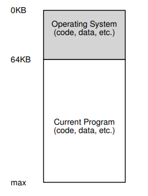
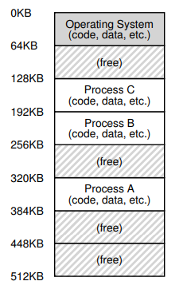
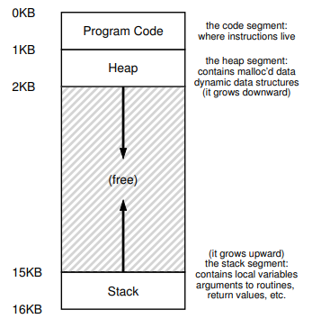
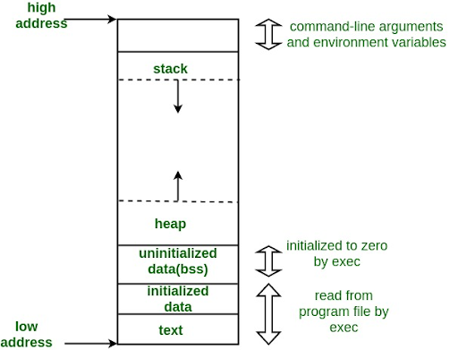
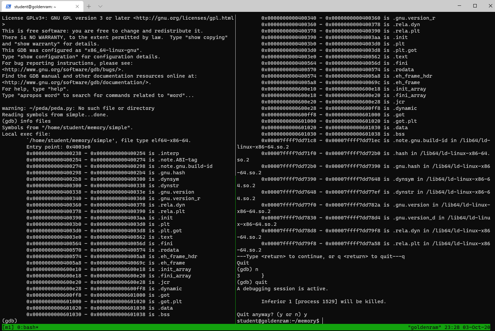
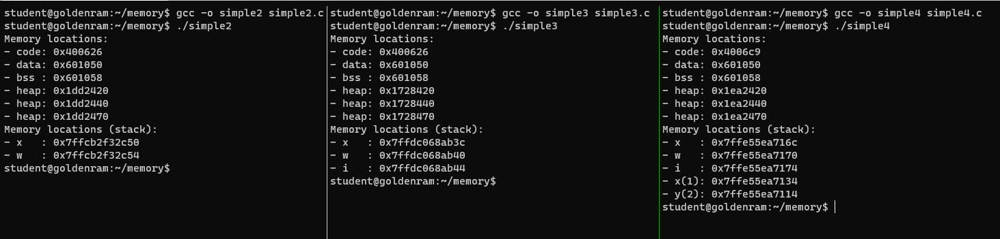
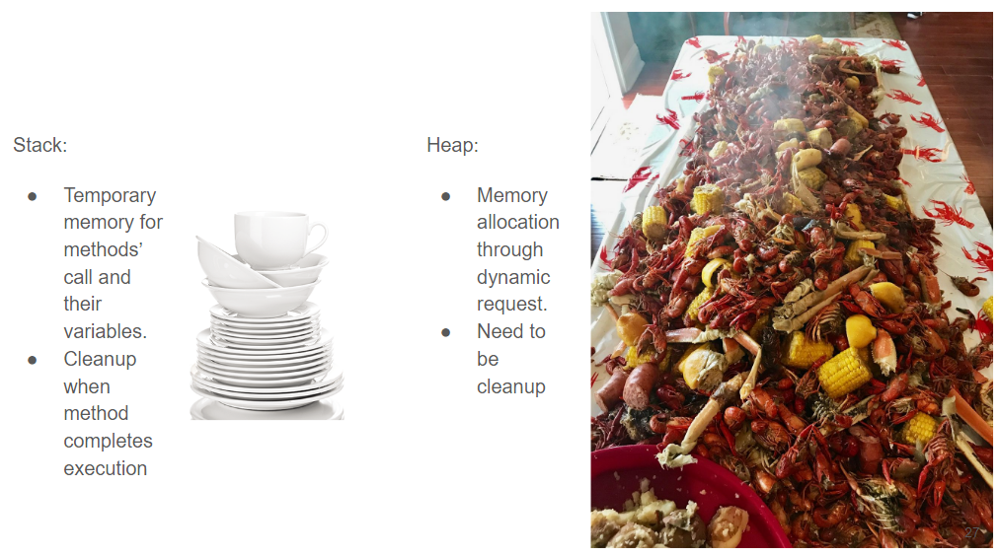
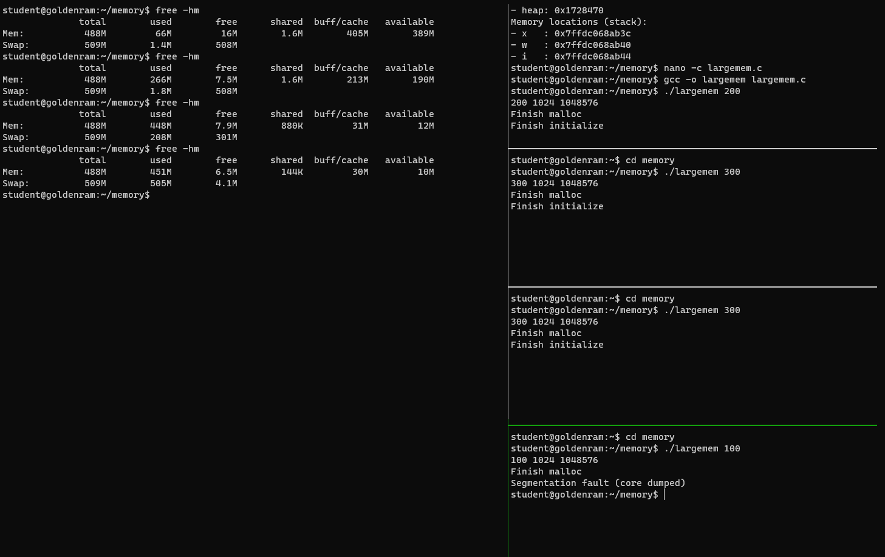

Memory virtualization
Contents
Memory virtualization#
Key concept
Question:
How can an illusion of infinite and isolated memory space be managed?
Objectives:
Understand how a process’ components are organized in memory.
Understand the idea of address space and memory virtualization.
Keypoints:
Memory virtualization is how the OS provides an abstraction of physical memory to process in order to facilitate transparency, efficiency, and protection.
0. Midterm Exam…#
Friday, October 6, 2023
In class, 50 minutes duration.
20 questions (similar in format to the quizzes).
Everything (including source codes) up to memory virtualization.
1. In the beginning …#
Users didn’t expect much.
To be honest, most, if not all, users are also developers …
2. Early systems#
Computers run one job at a time.
The OS was preloaded into memory and consisted of a set of routines.
There was one running program that uses the rest of memory.

3. Multiprogramming and time sharing#
Demands for
Utilization
Efficiency
Interactivity
Multiple processes ready to run at a given time.
The OS switches between them.
One approach is to run one process at a time and still give it full access to all memory (just like the early days …).
This requires switch processes from memory.
4. Multiprogramming and time sharing#
This solution does not scale as memory grows.
System event |
Size |
Latency |
|---|---|---|
CPU |
<1ns |
|
L1 cache |
32KB |
1ns |
L2 cache |
256KB |
4ns |
L3 cache |
>8MB |
40ns |
DDR RAM |
4GB-1TB |
80ns |
5. Multiprogramming and time sharing#
What we want to do
Leave processes in memory and let OS implement an efficient time sharing/switching mechanism.
A new demand: protection (through isolation)

6. Address space#
Provide users (programmers) with an easy-to-use abstarction of physical memory.
The running program’s view of memory in the system.
Contains all memory states of the running program:
Stackto keep track of where it is in the function call chain (stack frames), allocate local variables, and pass parameters and return values to and from routines.Heapis used for dynamically allocated, user-managed memory (i.g., malloc()).BSS(block started by symbols) contains all global variables and static variables that are initialized to zero or do not have explicit initialization in source code.Datacontains the global variables and static variables that are initialized by the programmer.Code(binary) of the program.
 
Image taken from Geeksforgeeks
7. Hands on: what is in your binary?#
Open a terminal (Windows Terminal or Mac Terminal).
Run the command to launch the image container for your platform:
docker run --rm --userns=host --cap-add=SYS_PTRACE --security-opt seccomp=unconfined -it linhbngo/csc-container /bin/bash
If you don’t have persistent storage, run the following
cd
mkdir csc331
cd csc331
git clone https://github.com/remzi-arpacidusseau/ostep-code.git
cd ostep-code/cpu-api
make
Launch a tmux session called
m1with two vertical panels.In the left panel, run the following commands:
mkdir ~/memory
cd ~/memory
Create a C program named
simple.cinside directorymemory.Reminder: The sequence to create/edit files using
nanois as follows:Run
nano -c file_nameType in the contents
When done, press
Ctrl-XPress
yto confirm that you want to save modificationPress
Enterto confirm the file name to save to.
Create
simple.cwith the following contents:
In the left panel, run the followings:
gcc -g -o simple simple.c
gdb simple
gdb-peda$ info files
In the right panel, run the followings:
cd ~/memory
gdb simple
gdb-peda$ b main
gdb-peda$ run
gdb-peda$ info files
The left panel shows the binary file, which is basically a packing list.
The right panel shows how the contents are loaded from static libraries (with memory changed)

Move to the right panel and press
Enterto continue going through the list.Go through the remaining steps (using
n) of the debugging process until finish.Quit
gdbinstances in both panels.
8. Hands on: what is in your binary?#
Disable address randomization.
You only need to do this using either tmux panels.
echo 0 | sudo tee /proc/sys/kernel/randomize_va_space
In the left panel, create
simple2.cinsidememorywith the following contents:
In the right panel, create
simple3.cinsidememorywith the following contents:
Compile and run
simple2.candsimple3.cnormally.Compare the output.

But Dr. Ngo just said the stack grows downward …?
9. Hands on: where the stack grows?#
Add one more vertical panel to your tmux session.
Adjust the panels’ width (
resize-pane -L/-R) so that they balance.In the new panel, create
simple4.cinsidememorywith the following contents:
Stack grows downward (high to low) relative to stack frames …
Within a stack frame, memory reserved for data are allocated in order of declaration from low to high

10. Hands on: observing inner growth (of the stacks)?#
In the first or second panel (the one next to the result from running
simple4, create a copy ofsimple4.ccalledsimple5.c.Modify
simple5.cto print out one or two additional variables in each of the functionsf1andf2.Compile and run
simple5.cto observe how within each stack frame, memory are allocated in the order from low to high.In the new panel, create
simple4.cinsidememorywith the following contents:
11. What is address space, really?#
The abstraction of physical memory that the OS is providing to the running program.
How can the OS build this abstraction of a private, potentially large address space for multiple running processes on top of a single physical memory?
This is called memory virtualization.
12. Goals of memory virtualization#
Transparency: The program should not be aware that memory is virtualized (did you feel anything different when programming?). The program should perceive the memory space as its own private physical memory.Efficiency: The virtualization process should be as efficient as possibleTime: not making processes run more slowlySpace: not using too much memory for supporting data structures
Protection: Protection enable the property of isolation: each process should be running in its own isolated memory space, safe against other processes.
13. Dr. Ngo loves his analogies#
In the firgure to the right, what represents the heap?

14. Hands on: is memory unlimited?#
Reduce the number of vertical panels down to 2 and adjust the sizes (see screenshot below).
In one of the panels, create
largemem.cinsidememorywith the following contents, then compile.
Split the right vertical panel to four (or more) horizontal panels.
In the left panel, first run
free -hmand study the output.In the top right panel, inside
memory, runlargememwith a command line argument of200.In the left panel, rerun
free -hmand study the new output.Subsequently, alternatve between running
largememin the right panels andfree -hmin the left panel, adjusting the command line argument oflargememsuch that you run into a segmentation fault in the last panel.This is the impact of memory allocation (reservation).
